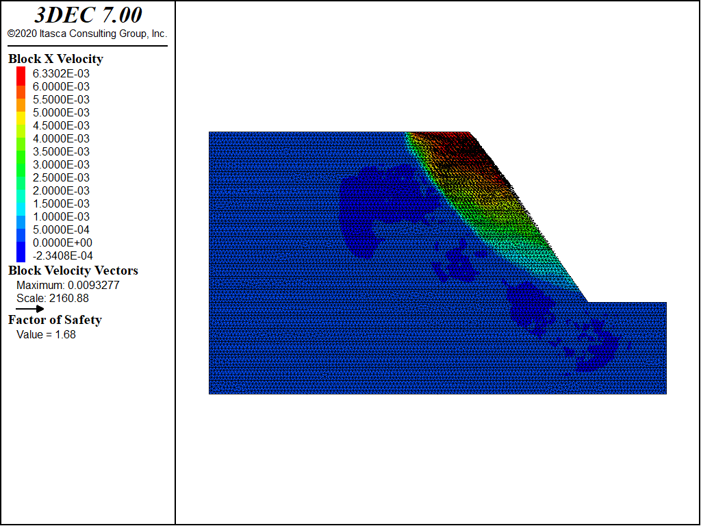
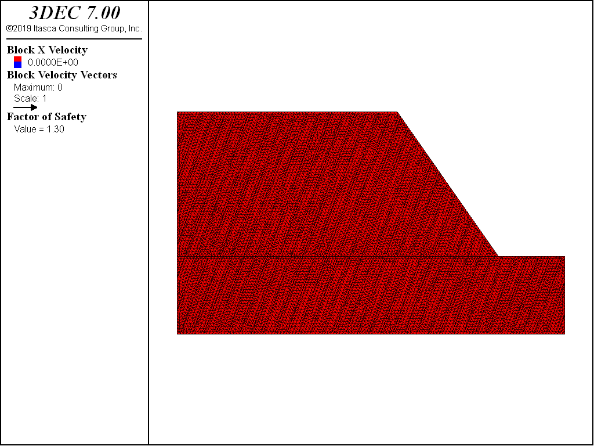
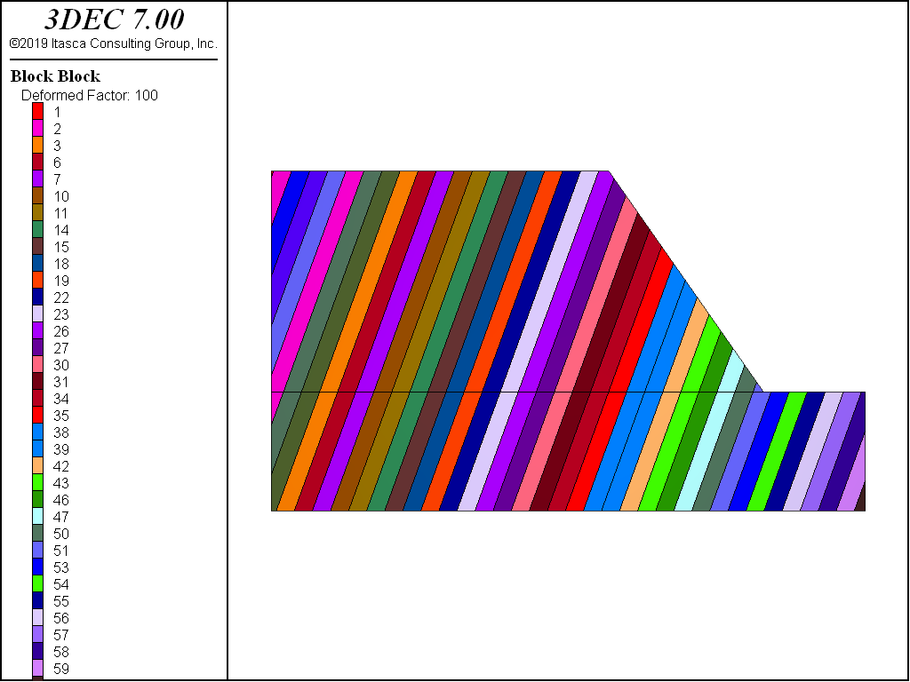
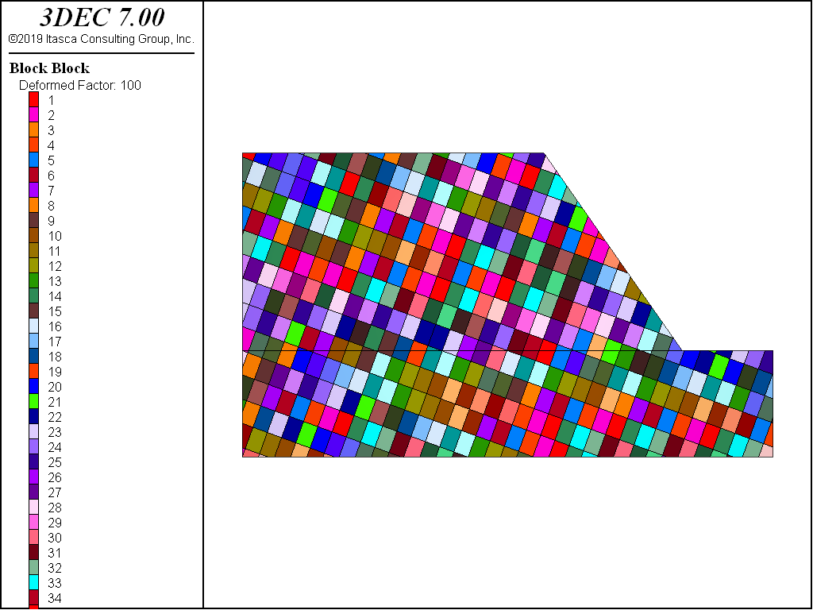
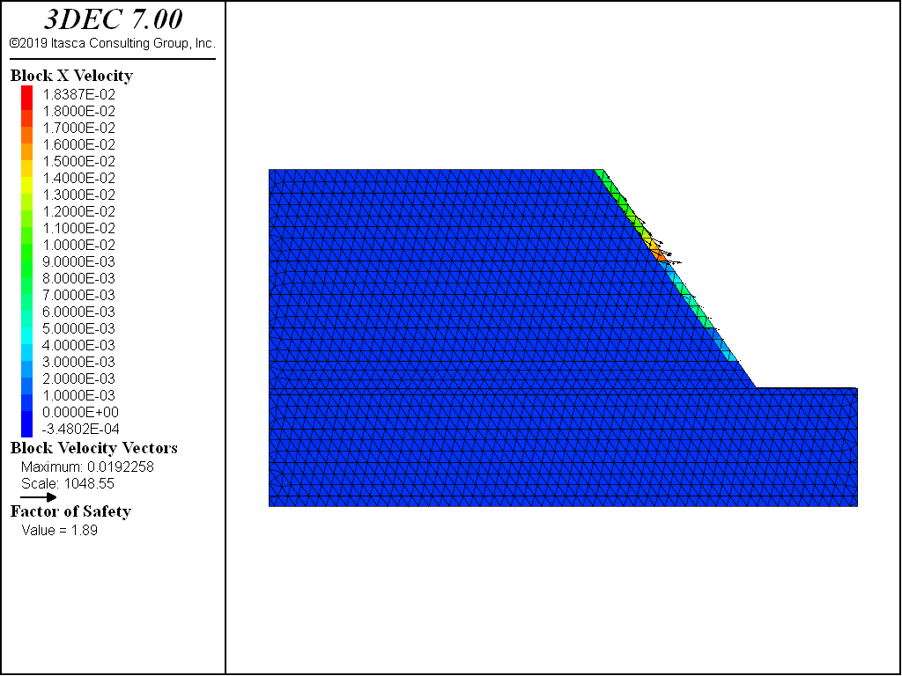
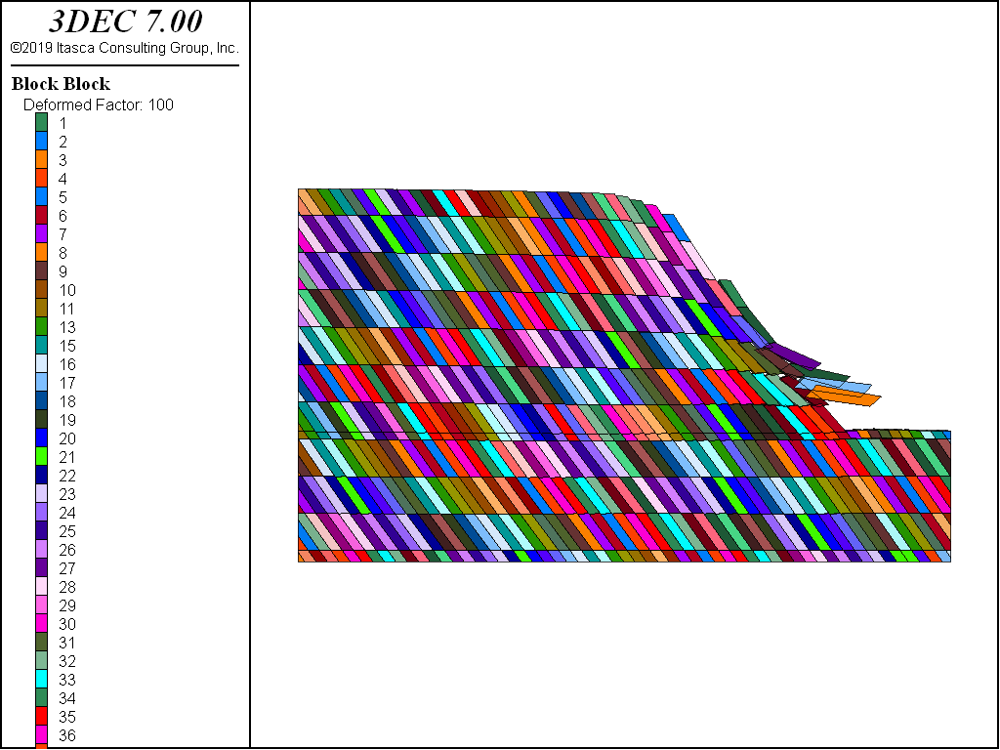

示例：采用强度折减法进行安全系数计算
节理莫尔-库仑材料简单边坡的破坏模式
3DEC 中采用强度折减法的安全系数计算，可以同时确定节理岩体中边坡的安全系数和破坏模式。本节运行若干模型，以说明可从安全系数计算中识别出的不同类型破坏模式。破坏模式包括均质无节理岩质边坡的岩体破坏、含出露或非出露不连续面边坡的平面破坏，以及涉及块体前倾或后倾的块体倾倒和弯曲倾倒破坏。（这些边坡模型与破坏模式在 Lorig 和 Varona [2004] 中也有详细描述。）
本节给出的节理岩体破坏模式假定节理结构可表示为离散块体系统。涉及在完整岩石内部尖灭的节理的破坏模式（如阶梯路径破坏）同样可用 3DEC 模拟。
本节所述的所有稳定性分析算例均采用简单的边坡几何形状。边坡高度为 260 m，坡角为 55°。模型中的岩块采用可变形莫尔-库仑材料表示，不连续面表现为库仑节理材料。所有模型中的可变形块体最大网格单元尺寸均设为 5 m。所有算例所用的模型边坡几何形状如下所示。

共分析了六个边坡稳定性算例。这些算例包括一个无节理结构的模型、三个含一组节理的模型和两个含两组节理的模型。六个算例的岩块属性与节理属性列于 表 1（Table 1）。
| 土体属性 | 算例 1 | 算例 2 | 算例 3 | 算例 4 | 算例 5 | 算例 6 |
|---|---|---|---|---|---|---|
| 岩石密度 (kg/m3) | 2660 | 2660 | 2660 | 2660 | 2660 | 2660 |
| 岩石体积模量 (GPa) | 6.3 | 6.3 | 6.3 | 6.3 | 6.3 | 6.3 |
| 岩石剪切模量 (GPa) | 3.6 | 3.6 | 3.6 | 3.6 | 3.6 | 3.6 |
| 岩石黏聚力 (kPa) | 675 | 675 | 675 | 675 | 675 | 1010 |
| 岩石抗拉强度 (kPa) | 0 | 0 | 0 | 0 | 0 | 1010 |
| 岩石内摩擦角（度） | 43 | 43 | 43 | 43 | 43 | 43 |
| 节理组 1 倾角（度） | – | 145 | 110 | 70 | 70 | 125 |
| 节理组 1 间距 (m) | – | 10 | 20 | 20 | 20 | 10 |
| 节理组 1 内摩擦角（度） | – | 40 | 40 | 40 | 40 | 40 |
| 节理组 1 黏聚力 (kPa) | – | 100 | 0 | 0 | 0 | 0 |
| 节理组 1 刚度 (GPa/m) | – | 1 | 1 | 1 | 1 | 1 |
| 节理组 2 倾角（度） | – | – | – | – | 340 | 0 |
| 节理组 2 间距 (m) | – | – | – | – | 30 | 40 |
| 节理组 2 内摩擦角（度） | – | – | – | – | 40 | 40 |
| 节理组 2 黏聚力 (kPa) | – | – | – | – | 0 | 0 |
| 节理组 2 刚度 (GPa/m) | – | – | – | – | 1 | 1 |
这些算例展示了六种不同的破坏情况，将在后续各页中分别讨论。六个算例的命令列表见下文（below）。
算例 1：无节理均质岩石——岩体破坏
对于算例 1，边坡为无节理的均质岩石。边坡的破坏主要是在岩体中发生剪切，剪切破坏面近似为圆形，如 图 2（Figure 2） 所示。对于 表 1（Table 1） 中列出的算例 1 岩石属性，计算得到的安全系数为 1.68。注意，3DEC 模型中的破坏面通常可以通过速度矢量图以及位移或速度等值线图最清晰地识别。在 图 2（Figure 2） 中，速度矢量和 \(x\) 向速度等值线清楚地显示了破坏面：


图 2：算例 1——岩体破坏。
算例 2：出露节理结构——平面破坏
在算例 2 的模拟中，模型中增加了一组节理。节理倾角为 145°（即以 35° 出露于坡面），间距为 20 m。所形成的破坏机制是：坡脚附近沿节理滑动，同时坡顶附近块体发生拉伸破坏。图 （Figure fos3e1-lkrs）Figure fos3e1-lkrs 给出了破坏面。该算例计算得到的安全系数为 1.31。

算例 3：非出露节理结构——平面破坏
在第三种情况下，单一节理组的倾角设为 110°（即与边坡同向的 70°）。这使节理沿坡面不出露。节理间距为 20 m。该情况下的破坏模式为沿不连续面滑动，并在坡脚处剪断岩块。图 4（Figure 4） 展示了该破坏机制。在给定问题条件下，所得安全系数为 1.54。

算例 4：节理倾向坡内——弯曲倾倒破坏
在算例 4 中，节理组倾角为 70°，间距为 20 m。这使得节理陡倾进入坡面。节理形成柱状体，倾向于向坡外弯曲，从而导致弯曲倾倒破坏模式。图 5（Figure 5） 给出了破坏面，图 6（Figure 6） 通过放大的块体变形视图展示了弯曲倾倒模式。计算得到的安全系数为 1.26。


图 5：算例 4——节理倾向坡内时的弯曲倾倒破坏。


图 6：算例 4——由放大的块体变形识别出的弯曲倾倒模式。
算例 5：两组正交节理——前倾块体倾倒破坏
在算例 5 中，边坡含两组正交节理。一组节理倾角为 70°、间距为 20 m，横向节理组倾角为 −20°、间距为 30 m。横向节理为块体的转动提供了自由面。块体在自重驱动下向坡外前倾转动。图 7（Figure 7） 给出了算例 5 条件下的破坏面。计算得到的安全系数为 1.11。图 8（Figure 8） 中放大的块体变形图展示了块体向坡外的前倾转动。



图 8：算例 5——由放大的块体变形识别出的前倾块体倾倒模式。
算例 6：两组正交节理——反向（后向）块体倾倒破坏
当平行于坡面的节理和更平缓的横向节理特别软弱时，边坡可能发生后向或反向块体倾倒破坏。在算例 6 中，一组节理倾向为 125°（即平行于坡面）、间距为 10 m；横向节理组水平、间距为 40 m。注意，该算例为突出破坏模式，对岩块指定了弹性材料行为。图 9（Figure 9） 显示了反向倾倒破坏模式。计算得到的安全系数为 1.85。图 10（Figure 10） 中放大的块体变形图清晰显示了后向块体倾倒模式。


图 9：算例 6——含两组节理边坡的反向块体倾倒破坏。


图 10：算例 6——由放大的块体变形识别出的反向块体倾倒模式。
数据文件
⇐ Example Factor of Safety Calculations using the Strength Reduction Method | Verification: Tests for a Simple Slope in Hoek-Brown Material ⇒
| 这些内容对您有帮助吗？… | FLAC3D © 2019, Itasca | 原文更新于 2020 年 10 月 8 日 |